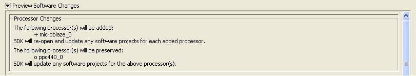
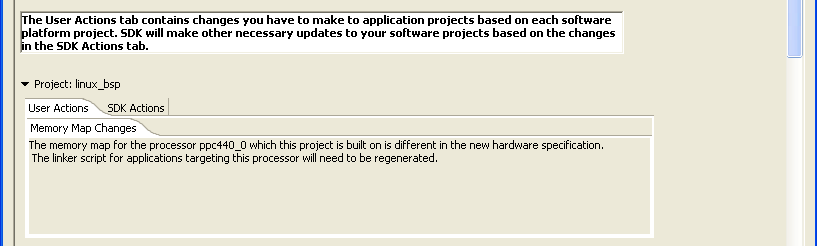
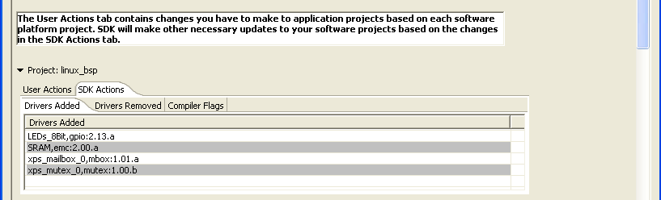

Xilinx embedded software
The Preview Software Changes panel lists the changes that are required in your software projects when the hardware specification file used by the workspace is changed.
You might see this panel while monitoring hardware project changes or re-targeting software projects.

If a processor is deleted from the hardware design, the software projects related to that processor are closed in the workspace, but not removed. They will no longer be listed in the C/C++ Projects view. You can, however, view the contents of these projects in the Navigator view.
If the processor is added to the hardware design, it is listed in the C/C++ Projects view. If the workspace includes any closed software projects for this processor, they will be re-opened.

Tasks that might require your action or attention due to changes in the hardware design are listed in the User Actions tab under the project name. For example, Memory Map Changes might require you to change the linker script of the software application. The tasks that are listed under User Actions depend on your particular project.
Tasks that SDK performs to match the Software Projects to changes in the hardware design are listed in the SDK Actions tab under the project name. The following sections might contain information:
| Name | Function |
|---|---|
| Drivers Added | The default drivers that will be added to the software platform for the new peripherals in the processor sub-system |
| Drivers Removed | The drivers and any reference to drivers that will be removed from the software platform for peripherals that were removed in the processor sub-system |
| Compiler Flags | Changes to the compiler flags for building the platform and applications based on changes to the processor configuration |

Auto-synchronization of software projects
Monitoring hardware project changes
Copyright © 1995-2012 Xilinx, Inc. All rights reserved.